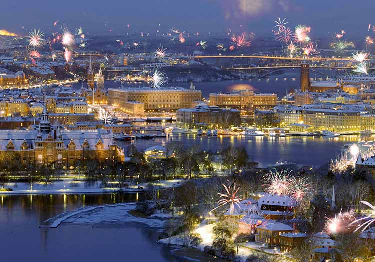
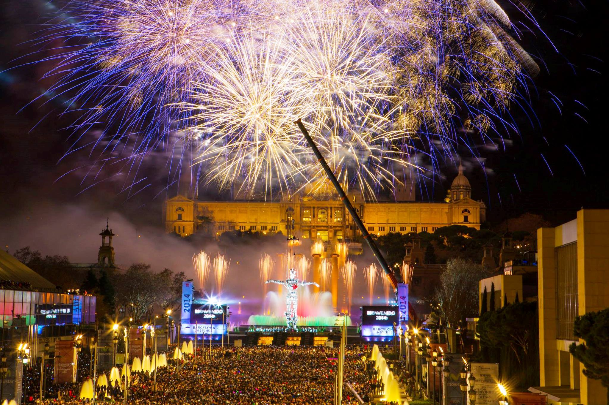
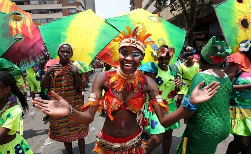
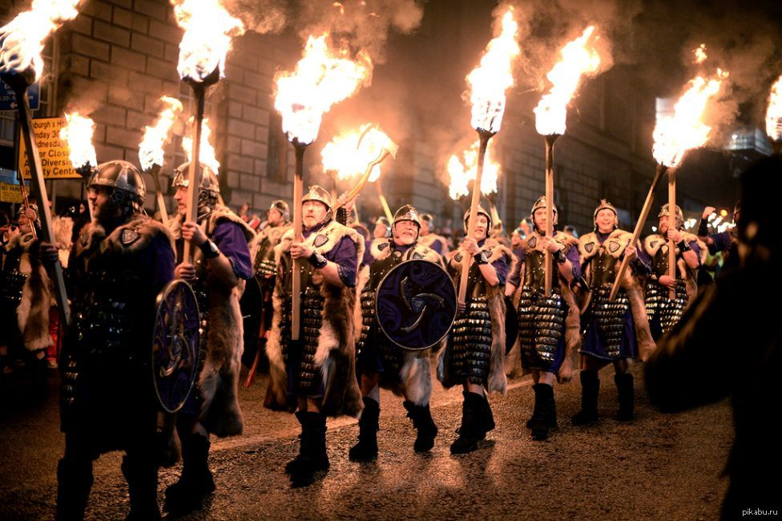
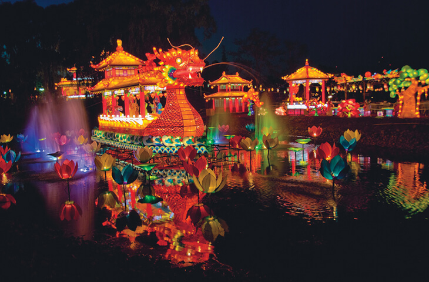
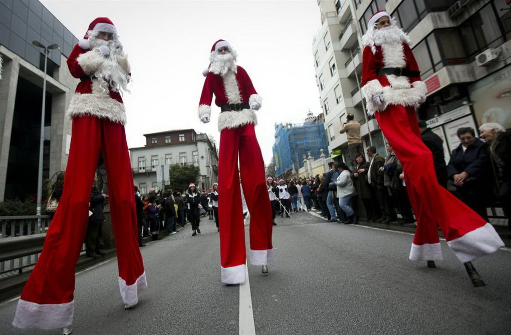

Финляндия В канун Нового года финны гадают на воске, а на праздничный стол ставят много блюд и напитков. Самое желанное угощение для северян – сладкая каша из риса и кисель из слив. Финского Деда Мороза зовут Йоулупукки. Переводится это имя как «рождественский козел», так доброго дедушку именуют за то, что он ездит на запряженной козлами повозке. Старичок хорошо слышит, поэтому о своих желаниях ему лучше рассказывать шепотом, чтобы о них не узнал злой дух.
Швеция В канун Нового года шведские дети проводят выборы Лючии – королевы света. Назначенная на этот пост девушка надевает платье белого цвета и корону, на которой закреплены зажженные свечи. Лючия угощает лакомствами домашних питомцев и одаривает детей. Праздник света сопровождается зажженными на улицах, а также в домах яркими огнями.
Венгрия В преддверии 31 декабря французы украшают дом фигурками из дерева и глины. Дед Мороз во Франции откликается на имя Пер Ноэль и кладет детям подарки в обувь. Королем новогодней ночи становится ребенок, который получает праздничный пирог с запеченным внутри бобом.
Испания Каждый испанец под бой местных курантов обязательно съедает дюжину виноградин – этот ритуал дарует удачу на весь следующий год. В испанских магазинах даже продают банки с виноградинками без семечек и кожи. Еще один интересный момент: Новый год нужно встретить в нижнем белье красного цвета, чтобы в течение следующих 12 месяцев не испытывать материальных проблем. Традиция распространяется и на мужчин, и на женщин.
Италия Многим известно, что в Новый год итальянцы избавляются от старых вещей, выбрасывая их прямо в окна, согласно средневековым традициям. Этот обычай соблюдается не во всех крупных городах, в основном он жив в деревенской местности. 1 января жители Италии отправляются за проточной водой и несут ее домой, стараясь встретить сгорбившегося старика. По поверьям, это сулит удачу, в отличие от столкновения с детьми или монахами. Вместо Деда Мороза подарки в стране раздает летающая на метле Фея Бефана. Однако волшебный дедушка в Италии тоже есть, его имя – Баббо Натале. На празднике жители Апеннин едят чечевицу, орешки и виноград, которые являются символами здоровья, достатка и долгих лет жизни.
Франция В преддверии 31 декабря французы украшают дом фигурками из дерева и глины. Дед Мороз во Франции откликается на имя Пер Ноэль и кладет детям подарки в обувь. Королем новогодней ночи становится ребенок, который получает праздничный пирог с запеченным внутри бобом.
Япония Новый год в Стране восходящего солнца встречают в новой одежде, чтобы защититься от болезней и вообще стать любимчиком Фортуны. Елкой служит небольшое дерево мотибана. Ветками сосны декорируют двери. Также приветствуются бамбуковые ростки и ветки, персиковые и сливовые мини-деревья. В новогоднюю ночь каждый японец мечтает услышать 108 колокольных ударов, чтобы стать лучше и избавиться от негатива. Здоровье и благополучие в семье символизируют такие блюда, как рис, лапша, фасоль и карп.
ЮАР Как и в Италии, в ЮАР избавляются от старых вещей, выбрасывая их прямо в окно. Правда, в последние годы власти стремятся запретить эту традицию по соображениям безопасности.
Англия Англичане празднуют Новый год мирно и при этом разнообразно: разыгрывают сценки из сказок, устраивают карнавал и уличные ярмарки. Для подарков дети готовят не чулок, как в ряде стран, а тарелку, которую ставят на стол. Чуть раньше полуночи тишину разбавляет звон колокола, который сигнализирует о наступлении Нового года. Одновременно с этим под веткой омелы предаются поцелуям влюбленные – считается, что этот романтический ритуал уберегает пару от расставания в течение следующих 12 месяцев. На классическом праздничном столе англичан присутствуют индейка с картофелем, каштанами, соусом, выпечка с мясной начинкой и тушеная брюссельская капуста. На десерт подаются фрукты, а также пудинг.
Шотландия Шотландский Новый год носит название Хогмани и проходит в формате праздника огня. Его участники сжигают бочки, наполненные дегтем и символизирующие старый год. Также это дань древним традициям, по которым пламя защищало от злых сил и, брошенное в воду, обеспечивало людям поддержку духов воды. Самый желанный первый гость 1 января в шотландском доме – брюнет, который переступает порог не с пустыми руками. Мужчина с темными волосами, согласно местным поверьям, приносит удачу. Гости, приходящие на праздник, должны приносить с собой уголь, который они позже бросят в камин на удачу. На новогодний стол в Шотландии утром подают лепешки из овса, сыр и пудинг, во второй половине дня – бифштекс, гуся, яблоки в тесте либо пирог.
Бразилия Новый год здесь имеет в своей основе празднование дня водной богини Иманжи, покровительницы моряков. Ей приносят дары и в виде свечей и цветов, которые отправляют вплавь, и загадывают желания. В новогоднюю ночь в Бразилии не бьют куранты – оставшиеся до полуночи секунда считают вслух. Из подарков дарят в основном сувениры, так как главные презенты вручают еще на Рождество. В праздничную ночь одетые в белое (в маленьких городах – в голубое) люди братаются, прощают друг друга и вместе смотрят световое шоу в Копакабане и салют в местечке ди Фрейтас. После Нового года начинается карнавал.
Вьетнам Для вьетнамцев новый год наступает в период с 21.01 по 19.02. Они украшают грабли, которые символизируют способность заполучить деньги и счастье. Местного Деда Мороза – Тао Куэна – считают способным летать по небу, оседлав карпа, и становиться драконом. Чтобы волшебный дух исполнил желание, следует рассказать о нем настоящему карпу и выпустить в водоем. Чудесная рыба непременно передаст эти слова Богу. В Новый год также принято обмениваться добрыми пожеланиями, написанными черным по красному, украшать дом ветками цветущего персика и взрывать самодельные хлопушки. Основные вьетнамские новогодние блюда готовят из риса.
Эквадор, Перу В крупных городах этих стран на Новый год проводятся обряды, люди общаются с шаманами и пытаются с их помощью увидеть будущее. Остается популярным гадание на яйце и пиве. Распространены и приметы. Чтобы привлечь удачу, перуанцы и эквадорцы украшают красивую молодую женщину плодами. Счастье же помогает привлечь одежда оптимистичного желтого цвета, а любовь – красного. Эквадорцы, мечтающие провести год в путешествиях, должны во время боя курантов оббежать несколько раз вокруг дома с чемоданом в руке. А чтобы избавиться от прошлогоднего негатива, рекомендуется выбросить из окна стакан, наполненный водой. С ним разрушится и все злое, что присутствует в жизни человека.
Колумбия Персонаж под названием Старый год провозглашается главным героем колумбийского карнавала. Он передвигается на ходулях и развлекает детей забавными историями. Местный дед Мороз, которого именуют Папой Паскуале, отвечает за фейерверки. Перед самым Новым годом устраивают парад кукол.